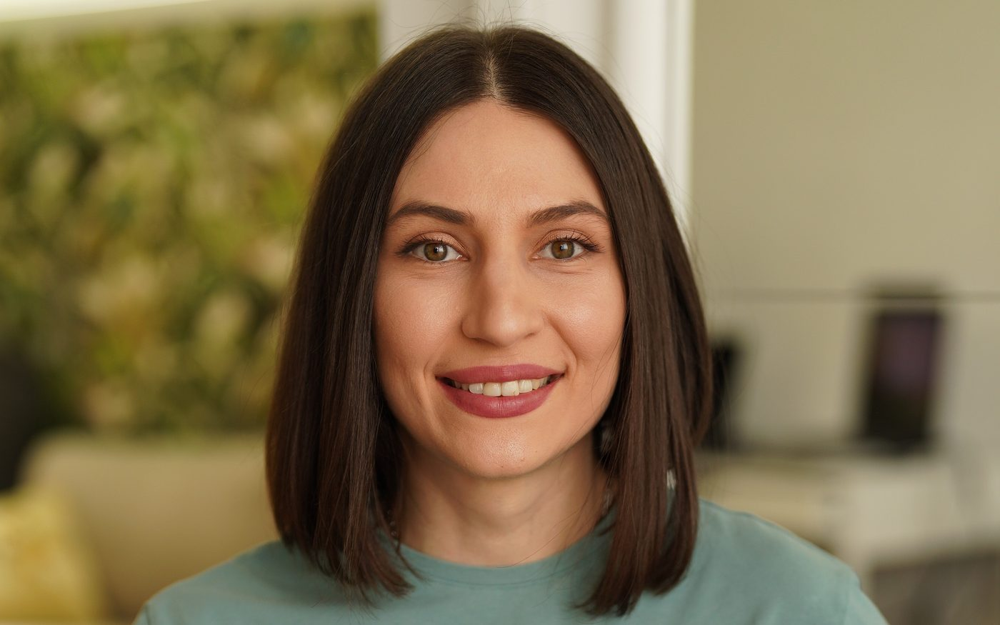

#suntaici
— împreună.
Un spațiu unde părinți conștienți vorbesc între ei despre ce contează cu adevărat. Nu un curs, nu un grup de Facebook — o comunitate moderată, cu sub-spații tematice și prezența mea săptămânală.
Trial gratuit 14 zile · Te dezabonezi oricând · Acces și pe mobil

Pentru că niciun manual nu înlocuiește vocea unei alte mame.
Cursurile îți dau cadrul. Comunitatea îți dă continuumul — locul în care întrebi „mi se întâmplă mie sau e normal?" și primești răspuns de la cineva care e exact unde ai fost tu acum șase luni.
Eu sunt acolo să moderez și să răspund. Dar magia se întâmplă între voi.
În abordarea Montessori adultul urmează copilul, nu invers. La fel, în comunitate, adultul ascultă comunitatea, nu o conduce.
6 spații, alegi unde stai
Fiecare cu propriul ritm și propriile întrebări. Nu trebuie să fii peste tot — alegi ce-ți e util acum.
Primul an împreună
Atașament, hrănire, somn, „colici" — fără paniciune. Conversații cu mame care înțeleg sufocant de bine ce simți.
Toddler-ul tău și tu
Crize, limite, autonomie, somnul de noapte. Pași concreți, ne-judecători.
Adaptare la creșă / grădiniță
Sprijin paralel cu cursul de adaptare. Vorbim cu mame care trec în aceeași perioadă cu tine.
Montessori în casa noastră
Fotografii de spații reale, materiale DIY, întrebări tehnice despre rafturi, rutine, materiale.
Mama, înainte de mamă
Burnout, vinovăție, relația de cuplu, identitatea ta. Spațiul în care vorbim despre tine fără copii.
Sala mare — întrebări cu Gabriela
O dată pe lună, sesiune Q&A în direct cu mine. Înregistrată dacă nu poți participa.
Resurse exclusive, actualizate constant
- ✦ 5—10 ghiduri PDF descărcabile (checklist adaptare, plan Montessori, rutină copilului mic)
- ✦ Sesiuni Q&A lunare cu mine, în direct + arhivă video
- ✦ 30% reducere permanentă la toate cursurile noi
- ✦ AI agent pentru cursanți activi — răspunde la întrebări direct pe baza materialelor mele în curând
Ce spun mamele care sunt deja aici
„Am intrat anxioasă, am rămas pentru oameni. Aici nimeni nu te judecă pentru că ești obosită sau nu știi ce să faci."
„Sesiunile cu Gabriela mi-au schimbat luna. E ca și cum ai o terapeută de familie disponibilă în orice moment greu."
Un singur preț. Toate spațiile, toate ghidurile, toate sesiunile.
Tarif lifetime pentru primii abonați.
Trial gratuit · Fără card cerut · #suntaici